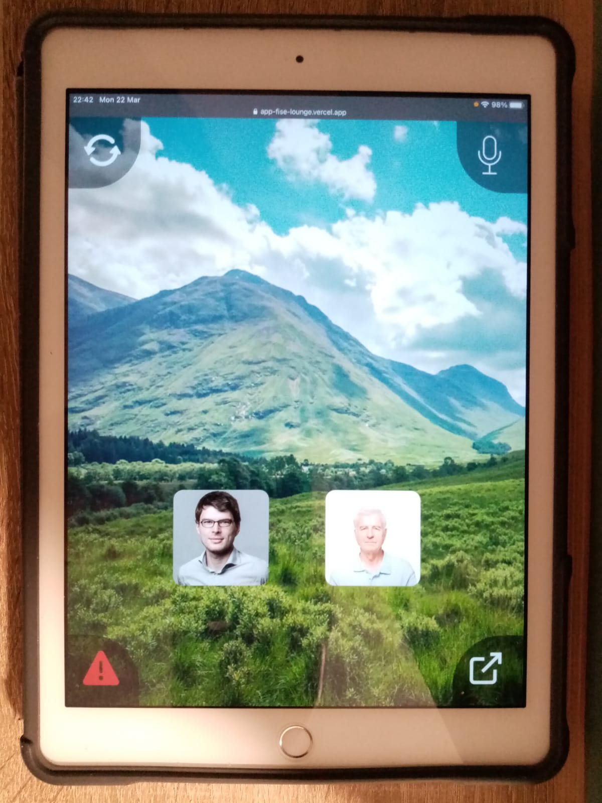
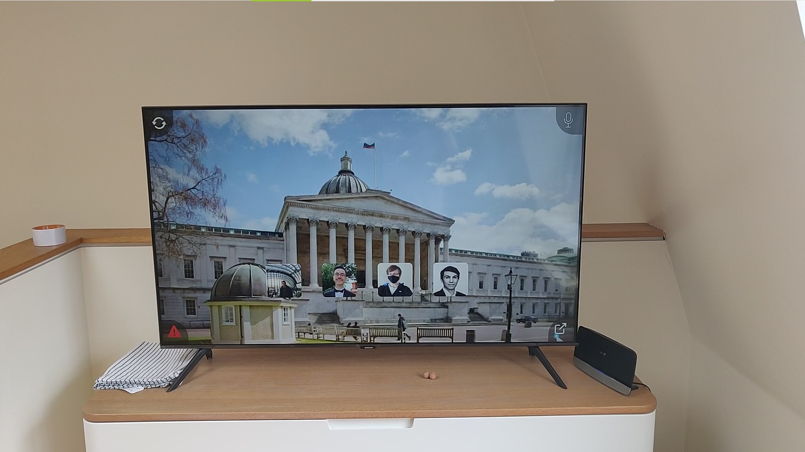
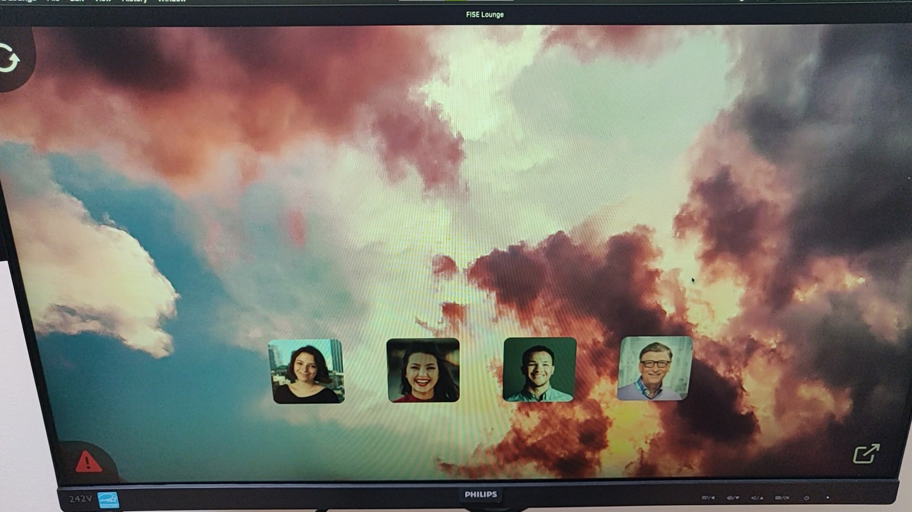
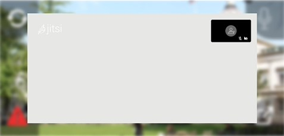
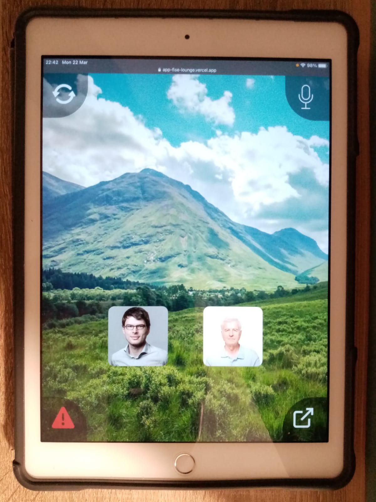
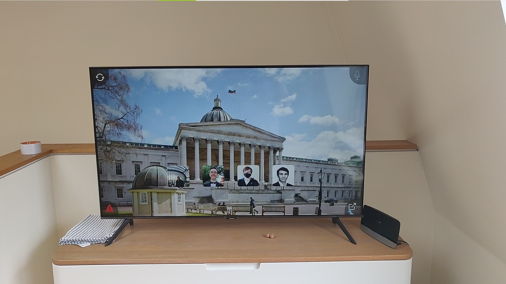
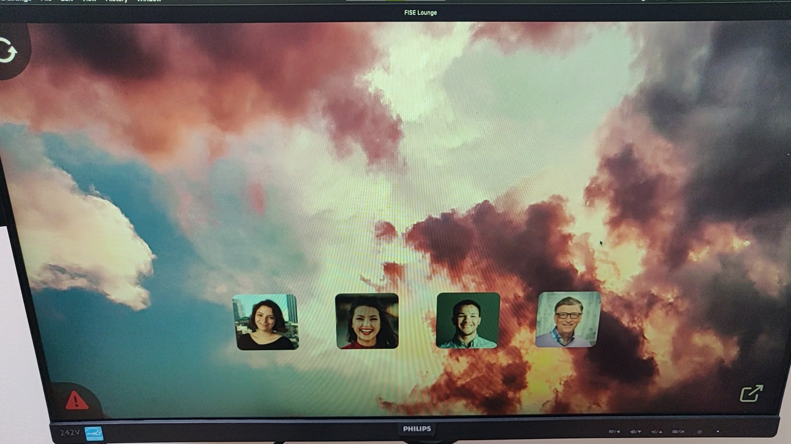
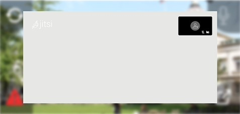
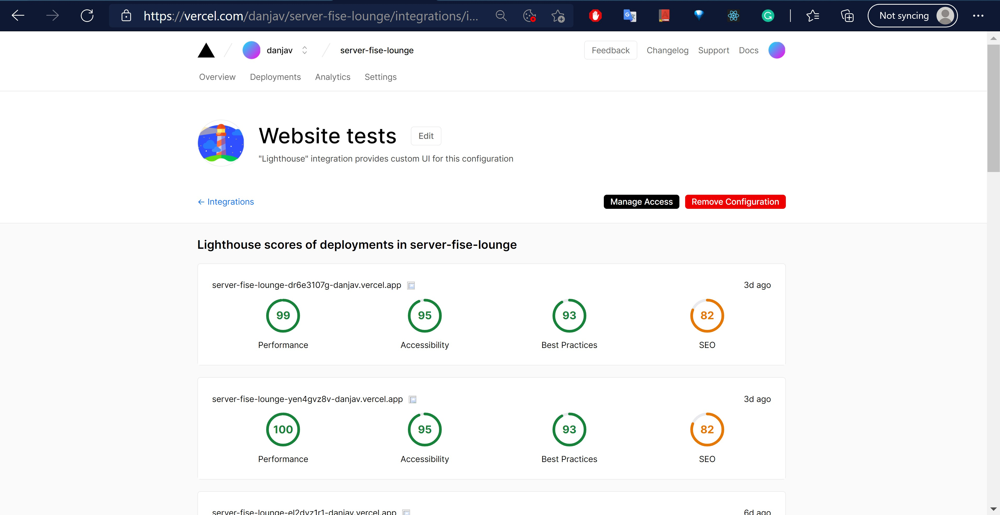
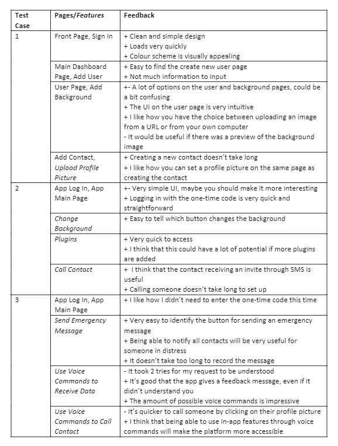

Testing Strategy
Following discussions with our clients, we decided to use a testing philosophy that focused on the end-users, primarily responsive design and user acceptance testing. With limited time and frequent updates of requirements we, together with the clients, took the decision not to put i.e. unit testing as a priority. Particularly since we are only working on a proof of concept.
Responsive Design Testing
In line with our client's requirement of “cross-platform functionality”, responsive design testing has been of significance to ensure that our program is usable across different devices and screen types. To cover this extensively, we have:
- Manually deployed and tried our program on various devices and platforms
- Used device emulators provided by browsers (Chrome, Edge, Safari, Firefox)
Some of the devices used for testing
- iPad (iOS)
- iPhone (iOS)
- OnePlus (Android Phone)
- MacBook (Mac OS)
- Dell Laptop (Windows)
- Custom Desktop (Windows)
- HP 2 in 1 Tablet (Windows)
- Philips Smart TV
- Samsung Smart TV
- Intel NUC (Windows)
Examples of emulated devices (on chrome)
Examples of real devices
 







Despite limited access to devices due to the pandemic, we are satisified with the Responsive Design Testing we conducted. It helped us adapt our design to be suitable on multiple types of devices.
Performance and Web Accessibility Testing
Performance testing has been done using Google’s lighthouse, an automated tool to assess performance, accessibility and compliance with progressive web application standards [1]. We have conducted the testing for each webpage in our dashboard, and for our onboarding and application main page. The key to achieving high scores was to do due dilligence on web application standards - particularly PWA for the main app - and follow them. Furthermore, to alleviate the process of manually performing these tests we added a lighthouse pipeline to our Vercel which we, in turn, had a separate pipeline to via our Azure DevOps repo. This meant that after each commit an automatic lighthouse test would be performed. This was something that helped us understand how each of our commits affected our respective scores. The following table shows the average test results across all webpages for both our dashboard and app. Examples of full test reports can be found in the appendix.
| Page | Performance Score | Accessibility Score | Best Practices Score |
|---|---|---|---|
| App | 98 | 96 | 99 |
| Dashboard | 99 | 95 | 93 |
Compatibility Testing
Since we have a web-app, it is important to ensure that it is proficient enough to run across many browsers. For this purpose, we ran both manual cross-browser testing and also automatic testing through BrowserStack (free version). Our results were similar to what we had expected, particularly since we kept note of the browser requirements of many of the functions used in our code.
Support for (tested version): Chrome (89), Edge (89), Firefox (87), Safari (14), Opera (73)
No support for: IE (11), Opera Mini (50)
User Acceptance Testing
In order to gain an understanding of how user interaction would look within our system, and in order to identify potential improvements, we asked 3 testers to carry out 3 different test cases within our platform. They were sometimes provided with additional information wherever it wasn’t possible for them to test the full scope of a feature (e.g. all the different voice commands). The test cases are detailed below, and we compiled the feedback we received into a table.
Tasks
Test case 1
The testers were given account details for the dashboard and asked to log in. They were tasked with
creating a new
user, navigating to the add background page and uploading a new background for that user, and then adding a
contact
and
setting a profile picture for that new contact.
Test case 2
We gave the testers a one-time code so that they could log in on the app. They were then tasked with
changing the
background, opening and using the plugins tab, and calling a contact.
Test case 3
Again, we asked the testers to log into the app. This time, they were tasked with trying out the voice
features by
sending an emergency message, asking for a weather forecast, and by using voice commands to call a contact.
*In the feedback table, features are italicised.
Integration & Unit Tests
We have used Jest - a Javascript testing framework that can be used for React applications [2] - and Enzyme - a Javascript testing utlity that helps test React components [3] - demonstrate unit and integration testing. Per the request of our client we did not emphasize the use of these tests. However, we still found them useful in understanding the rendering process and interactions between our components. In particular, snapshot testing was useful in ensuring that our UI did not change unexpectedly.
References
[1] “Lighthouse,” Google.com. [Online]. Available: https://developers.google.com/web/tools/lighthouse.
[Accessed:
01-Mar-2021].
[2] “Jest · 🃏 delightful JavaScript testing,” Jestjs.io. [Online]. Available: https://jestjs.io/.
[Accessed:
01-Mar-2021].
[3] “Introduction · Enzyme,” Github.io. [Online]. Available: https://enzymejs.github.io/enzyme/.
[Accessed:
01-Mar-2021].